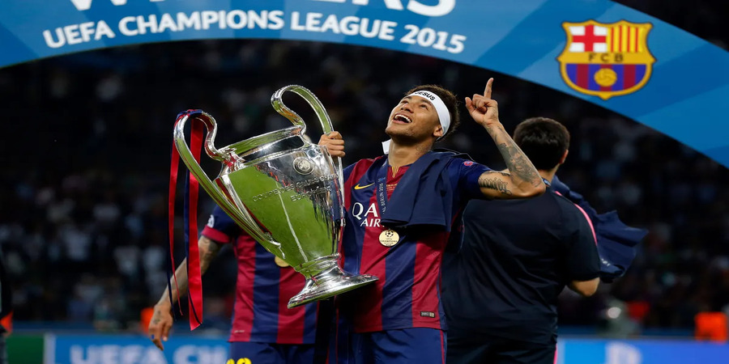
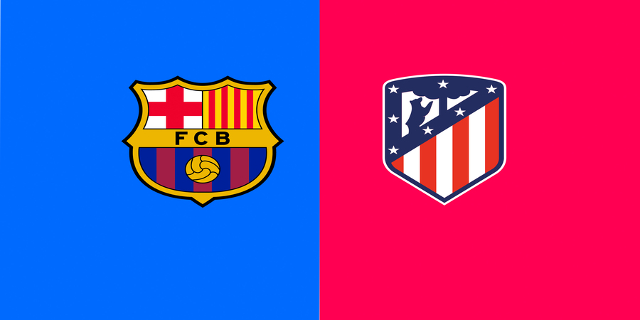
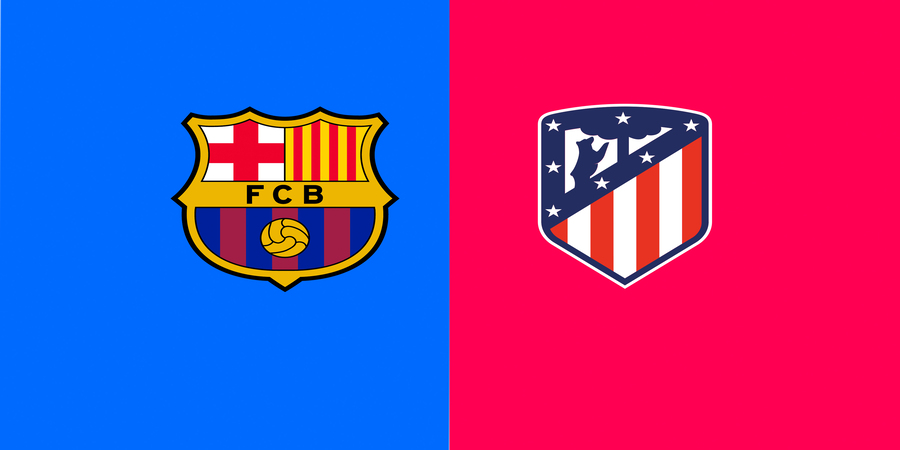
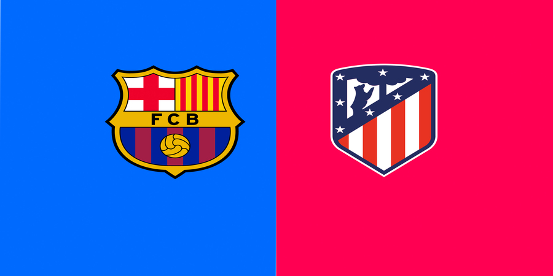
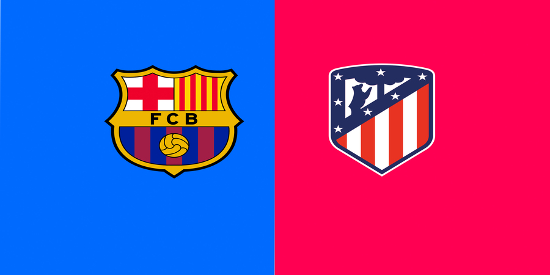

.jpg.jpg) 



FC Barcelona is racing against time to finalize the registration of Dani Olmo and Pau Víctor, two key players whose contracts are currently hindered by LaLiga's wage cap restrictions. While the original deadline for regularization was December 31, 2024, the club remains optimistic about resolving the issue before the January 31, 2025 transfer window closes or, at the latest, by the official Spanish market deadline on February 2.
FC Barcelona is preparing an offensive in the transfer market for the upcoming season with the aim of signing three players whose contracts end in June. The club's strategy focuses on acquiring top-level players without transfer fees, an opportunity that could be crucial to enhancing the squad for future titles. According to sources close to the club, Hansi Flick has communicated to President Joan Laporta the urgent need to strengthen key positions to continue competing at the highest level -Jonathan Tah -Jonathan David -Joshua Kimmich
Barcelona's 4-0 win ended a 42-game unbeaten streak in the Spanish top-flight for Los Blancos, and it was once again largely built around their own youth products. Despite two goals from veteran Robert Lewandowski, young prodigy Lamine Yamal became the youngest El Clásico scorer of all time at just 17 years and 105 days, as Barcelona fielded their second-youngest line-up against Madrid in 80 years.
Barça fans haven't stopped talking about it. What happened on Wednesday against Bayern Munich has already gone down in club folklore. The team's nemesis of recent years was well and truly put to the sword by one of the finest blaugrana performances in recent memory. We can't stop thinking about it, so here are five more delicious nuggets of info to help savour the moment.
| Position | Team | Played | Wins | Draws | Losses | Points |
|---|---|---|---|---|---|---|
| 1 | Atletico Madrid | 18 | 12 | 5 | 1 | 41 |
| 2 | Real Madrid | 18 | 12 | 4 | 5 | 40 |
| 3 | FC Barcelona | 18 | 12 | 2 | 5 | 38 |
| POS | CLUB | MP | F:A | GD | PTS |
|---|---|---|---|---|---|
| ROUND OF 16 | |||||
| 1 | Liverpool | 6 | 13:1 | +12 | 18 |
| 2 | Barcelona | 6 | 21:7 | +14 | 15 |
| 3 | Arsenal | 6 | 12:5 | +7 | 13 |
| 4 | Bayer Leverkusen | 6 | 15:5 | +10 | 13 |
| 5 | Aston Villa | 6 | 9:4 | +5 | 13 |
| 6 | Inter | 6 | 7:1 | +6 | 13 |
| 7 | Stade Brestois | 6 | 11:4 | +7 | 13 |
| 8 | Lille | 6 | 8:4 | +4 | 13 |
| KNOCKOUT PLAY-OFFS | |||||
| 9 | Borussia Dortmund | 6 | 18:9 | +9 | 12 |
| 10 | Bayern Munich | 6 | 17:8 | +9 | 12 |
| 11 | Atlético Madrid | 6 | 13:7 | +6 | 12 |
| 12 | AC Milan | 6 | 12:9 | +3 | 12 |
| 13 | Atalanta | 6 | 13:7 | +6 | 11 |
| 14 | Juventus | 6 | 9:4 | +5 | 11 |
| 15 | Benfica | 6 | 9:8 | +1 | 10 |
| 16 | AS Monaco | 6 | 10:7 | +3 | 10 |